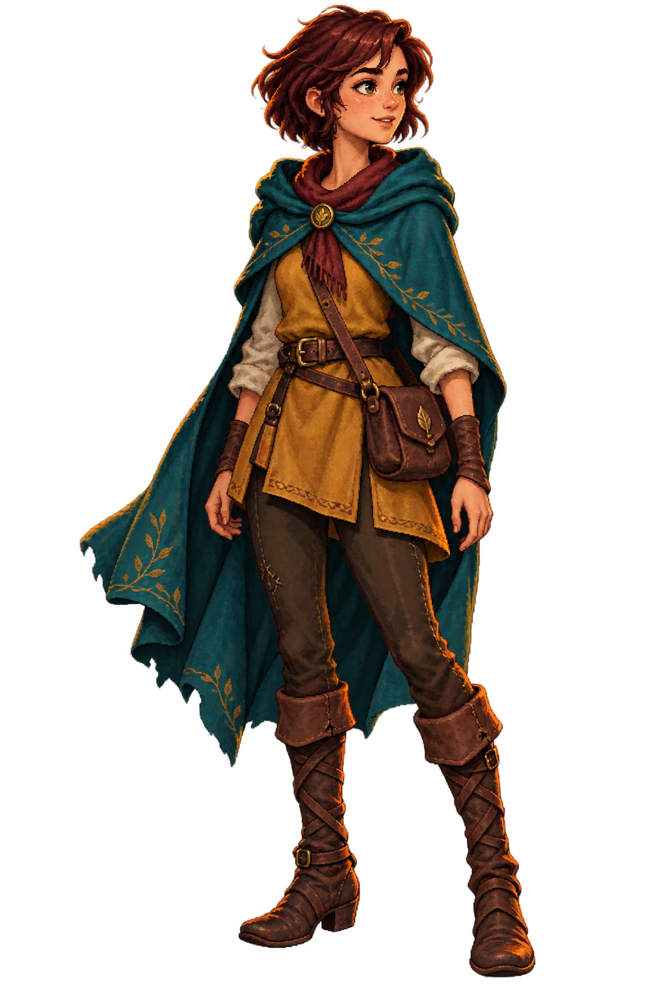

An original point & click tale
Moonfall
The Light Beneath the Roots
On the longest night, the forest forgot the stars.
One wayfinder still remembers their song.
Click to explore · Select an item, then where to use it · Press H for hints
MoonfallMoonfall Glade

LioraClick to continue
The sky remembers
Moonrise
Liora returns the fallen light to its path. Far beyond the forest, one window in the sleeping city flickers awake.
To be continued